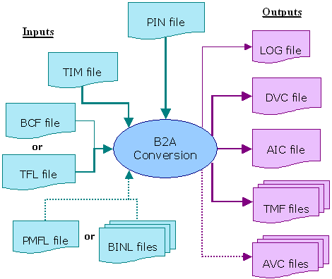

Batch Mode and Interactive Mode
In batch mode timing and vector retranslation are performed in one call of b2a. The following figure illustrates this mode:

Thick lines are used for SmarTest and ASCII interface files (solid for timing and dotted for vectors), thin lines for specific b2a files.
The b2a configuration file (*.bcf) and the testflow file (*.tfl) overlap in their information content. Normally only one of them will be passed to b2a. If both are specified, the configuration file has priority. The configuration file in its turn can be overridden by command line options. The vector setup can be specified in one global binary file or a pattern master file, but you can also pass multiple vector files to b2a.
A further option, which is not shown in the figure, is to specify a timing map file (*.tmf) already as an input file for the timing retranslation. This option allows you to control the names of the ASCII device cycles that will be created by b2a. If you pass a timing map file to b2a, then the timing retranslation will not generate a timing map file.